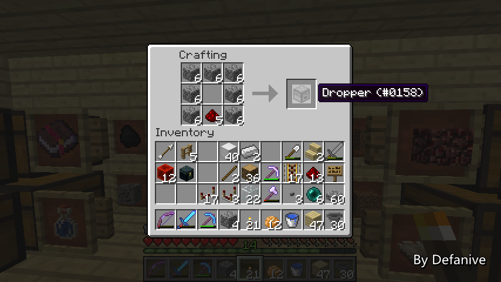
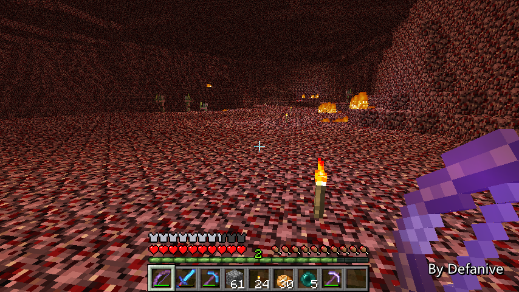

首页
上一页
252
253
254
255
256
257
257
258
259
260
261
262
下一页
末页
defanive2
无尽黑夜
14
除了比较器以外，投掷器也是必须的
投掷器在作为物品上传的媒介是非常方便的
PS 漏斗和投掷器传送物品的效果之前比较过了
在不同情况下，两种媒介都有用场
——来自 MCLive

18935楼
2013-07-13 00:55
defanive2
无尽黑夜
14
建造时又摔下来了
高空建筑实在是非常的困难
——来自 MCLive
18940楼
2013-07-13 01:01
defanive2
无尽黑夜
14
最后再把过滤器的线路全部连接到投掷器上
这样每次有一个物品被过滤出来
就会被传上来
——来自 MCLive
18942楼
2013-07-13 01:06
defanive2
无尽黑夜
14
最后把投掷器上传后的物品连接到储存的输入箱子即可
——来自 MCLive
18943楼
2013-07-13 01:10
defanive2
无尽黑夜
14
接下来需要给过滤器设置好过滤物品
第一个箱子准备做成过滤出火药的
——来自 MCLive
18945楼
2013-07-13 01:10
defanive2
无尽黑夜
14
然后把过滤器下方的传输漏斗和上传的投掷器都放入一个火药
这样应该这个分类装置就可以完整运行了
PS 下雨好烦啊啊啊
/toggledownfall：
You do not have permission to use the command.
FXCK YOU！！！
——来自 MCLive
18946楼
2013-07-13 01:12
defanive2
无尽黑夜
14
接下来就需要给储存系统装入箱子矿车了
目前打算先装10个箱子矿车，也就是5个大箱子的储存空间
如果不够了再扩容
——来自 MCLive
18947楼
2013-07-13 01:15
defanive2
无尽黑夜
14
装载完毕
现在对火药的分类和储存应该已经可以正常使用了
接下来我们测试一下
——来自 MCLive
18948楼
2013-07-13 01:17
defanive2
无尽黑夜
14
进入物品模式，放一批怪物下来测试
——来自 MCLive
18949楼
2013-07-13 01:20
defanive2
无尽黑夜
14
全部的火药被成功的分类到了储存箱里面
——来自 MCLive
18950楼
2013-07-13 01:20
defanive2
无尽黑夜
14
而非火药的其他物品，都被一直传送到了流水线的末端
如果说这些物品的分类装置也被做好的话
那么全部物品都可以被正确的装入了
——来自 MCLive
18951楼
2013-07-13 01:22
defanive2
无尽黑夜
14
好了，今天的直播就到这里了
今天我们完成了流水线的布置
以及火药的分离还有储存
其他物品的分离和储存也是类似，只需要更改过滤器即可
接下来几天我会在不直播时进行这些系统的建造
希望能在下次直播时完成绝大部分！
——来自 MCLive
18954楼
2013-07-13 01:25
defanive2
无尽黑夜
14
UHC 第二季 开始发布了
由于视频效果并不是很好，推荐观看第三季和第一季
如果是 UHC 的忠实粉丝的话，第二季也同样精彩！
http://tieba.baidu.com/p/2455325226
18961楼
2013-07-13 16:29
defanive2
无尽黑夜
14
昨天没有直播，那么今天来直播吧！
如果说有什么特别的事情
那么就是1.6.2的Optifine终于出正式版了！
于是更新到了1.6.2，装上正式版
PS 鉴于1.6的官方启动器实在太难看了
于是转战MagicLauncher
PS PS MagicLauncher和Optifine的作者是同一人
——来自 MCLive
18991楼
2013-07-14 18:12
defanive2
无尽黑夜
14
回到家里面跑了一下fps测试
稳定在200左右，相比1.5.2稍有提升
感觉这方面mojang做得是越来越好了
从正式版1.0到1.5.2效率都越来越高
PS 1.4->1.5和1.5->1.6这几次比较明显
——来自 MCLive
18994楼
2013-07-14 18:23
defanive2
无尽黑夜
14
LZ现在已经LV40了，其实是因为昨天玩了很久的MC
至于在做什么呢，其实大家也都能猜到
一直在off-camera建造刷怪塔
基本上已经彻底完工了
接下来我就来带大家参观一下完工之后的刷怪塔吧
——来自 MCLive
18998楼
2013-07-14 18:25
defanive2
无尽黑夜
14
从地狱门出来就到我们改造完成的刷怪塔了！
装潢也基本完成，各类装置也都设置好了
——来自 MCLive
19001楼
2013-07-14 18:28
defanive2
无尽黑夜
14
右边的物品分类和储存也完成了
4种普通物品，以及最后一个稀有掉落的箱子
PS 昨天一共花了3个小时在这个工程上
其中2个小时都是花在了分类和储存系统上
——来自 MCLive
19004楼
2013-07-14 18:30
defanive2
无尽黑夜
14
左侧是控制面板以及地狱门
——来自 MCLive
19006楼
2013-07-14 18:34
defanive2
无尽黑夜
14
后面就是一个简单的工作站台
以及一条去到上方的楼梯
通过楼梯可以去到上方的
刷怪塔、分离器、物品分类和储存系统 等核心装置处
以防电路出故障等，可以进行方便的维修
——来自 MCLive
19007楼
2013-07-14 18:36
defanive2
无尽黑夜
14
来到上面可以看到电路
左边是控制面板的电路部分
前上方是怪物分离器
右侧则是物品分类和储存系统
——来自 MCLive
19008楼
2013-07-14 18:39
defanive2
无尽黑夜
14
物品分类和储存系统里面的电路布置比较麻烦
不过在做好第一个之后，剩下的几个就稍微简单了
有参照物，可以比较方便的进行建造
所有的漏斗都用半砖覆盖上了
——来自 MCLive
19009楼
2013-07-14 18:41
defanive2
无尽黑夜
14
当然也对刷怪塔进行了不少的测试
工作非常稳定
1.6.2更新后僵尸会有几率以僵尸婴儿的方式刷出
不过仍然是大于1格高，因此不会影响整个系统的工作
——来自 MCLive
19013楼
2013-07-14 18:47
defanive2
无尽黑夜
14
当然，刷怪塔还是没有完工的
除了这个（就不告诉你）模式还没开工以外
这个刷怪塔还差一个信标
现在怪物并不能一击必杀
原因有两个，一个是怪物仍然有1心血
其次是，即使降到半心，僵尸有防御点数，也不能一击必杀
因此打算把一个信标搬到刷怪塔这里
提供 力量I+回血I 的效果
——来自 MCLive
19015楼
2013-07-14 18:49
defanive2
无尽黑夜
14
目前生存世界里面有3个信标
两个被留在了家附近使用
而另外一个则被作为工作信标随工程使用
经常是被用作提供 挖掘效率II 加速大型挖掘工程
例如在END挖3000+黑曜石
现在信标如果没记错的话，应该还留在章鱼塔
当时挖掘章鱼塔的大坑用到了
一路长途跋涉中
——来自 MCLive

19019楼
2013-07-14 18:55
defanive2
无尽黑夜
14
很久没来过这个地方了
不知道大家还记得这是什么工程不？
——来自 MCLive
19020楼
2013-07-14 18:56
defanive2
无尽黑夜
14
去往章鱼塔的地狱门就设置在这个工程的后方
章鱼塔坐落在一个很远的沙漠里面
这个沙漠在刷沙机被修复之后
就是我挖沙子的主要来源
——来自 MCLive
19021楼
2013-07-14 18:57
defanive2
无尽黑夜
14
信标和章鱼塔！
好久不见！
——来自 MCLive
19022楼
2013-07-14 18:58
defanive2
无尽黑夜
14
今天也要对章鱼塔动一点手脚
更新后章鱼塔的活塞发生了一些奇怪的事情
有一些活塞产生了不应该产生的BUD效应
导致了现在这样的水流不均匀
同时脉冲缩短器也稍微太短了一点
需要加长
——来自 MCLive
19024楼
2013-07-14 19:01
defanive2
无尽黑夜
14
之所以说活塞产生了不应该产生的BUD就是这个情况
虽然已经彻底失去充能了，但是活塞处于BUD状态
按照这种布线是不应该发生的
目测是BUG，有时间准备重现之后跟mojang汇报
——来自 MCLive
19026楼
2013-07-14 19:02
首页
上一页
252
253
254
255
256
257
257
258
259
260
261
262
下一页
末页